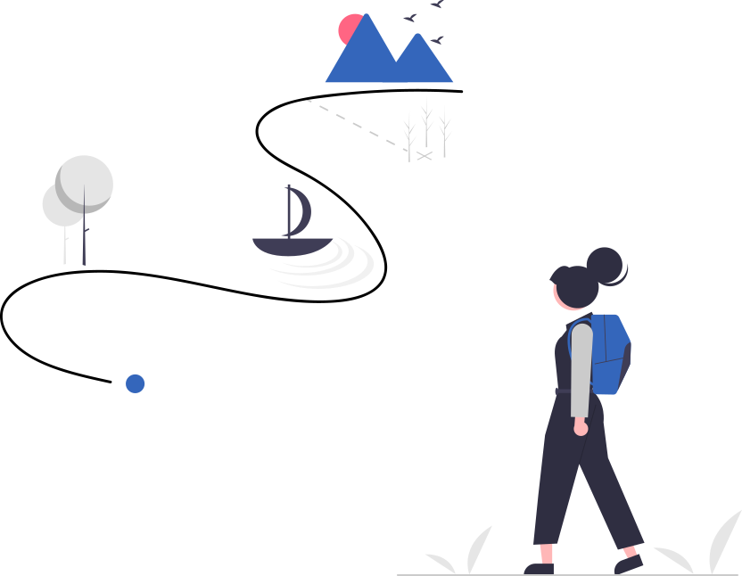

about
About Personalized Learning²
PL² aspires to bridge opportunity gaps through personalized learning.
Our Vision
More than 60 years after the Supreme Court's ruling to desegregate schools, American K-12 education remains marred by strikingly inequitable access, opportunities, and learning outcomes across racial groups and income classes. These gaps are especially high in mathematics - a key gateway to high-paying careers in the 21st century - and they perpetuate inequalities across generations.
Our vision is to build a connective network between Pittsburgh-based universities, school districts, and community organizations that will develop and test an infrastructure of scalable social interaction techniques, software tools, and data-driven continuous improvement to personalize learning for the whole child.
This network will combine the expertise of the University of Pittsburgh's Center for Urban Education - a nationally recognized center of excellence for research and service in urban education - with the strengths of Carnegie Mellon University's LearnLab and affiliated initiatives in the domains of educational technology, AI, and learning science.
Our vision is to build a connective network between Pittsburgh-based universities, school districts, and community organizations that will develop and test an infrastructure of scalable social interaction techniques, software tools, and data-driven continuous improvement to personalize learning for the whole child.
This network will combine the expertise of the University of Pittsburgh's Center for Urban Education - a nationally recognized center of excellence for research and service in urban education - with the strengths of Carnegie Mellon University's LearnLab and affiliated initiatives in the domains of educational technology, AI, and learning science.


Our Mission
Our mission is to double the rate of math learning for participating students. We do this by increasing the number of hours
students spend practicing math outside the classroom, guided by a trained educator who acts as both a tutor and mentor.
What does the square in PL² mean?
Our professional development solution PL2 Training consists of personalized lessons for mentors and tutors to hone their cognitive, motivational and math content skills, while our data-driven student intervention solution, PL2 Toolkit, aggregates and analyzes multi-modal data from various streams to suggest personalized interventions for students.
Hence the power of personalized learning is squared!
Hence the power of personalized learning is squared!